Referenzen
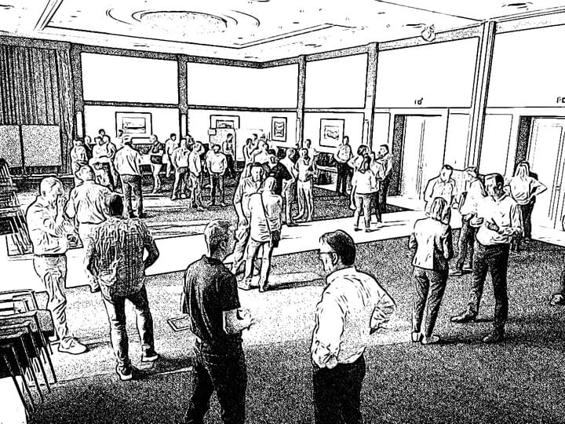
GEWOBA AG Wohnen und Bauen
Veränderung proaktiv gestalten
Neue Impulse gemeinsam auf Augenhöhe entwickeln
"Wir möchten uns bei Herrn Schneidereit herzlich für die Moderation unserer Führungskräfteklausurtagung bedanken. Seine zugängliche Art hat dazu beigetragen, die Teilnehmenden von Beginn an zu Beteiligten zu machen und durch seine Moderation hat er eine positive und produktive Atmosphäre geschaffen, in der die Führungskräfte offen kommunizieren und gemeinsam an zukunftsorientierten Arbeitspaketen arbeiten konnten. Herr Schneidereit erwies sich dabei als guter Vermittler, der die Gruppendynamik geschickt lenkte und gleichzeitig sicherstellte, dass jede und jeder Teilnehmende gehört wurde."
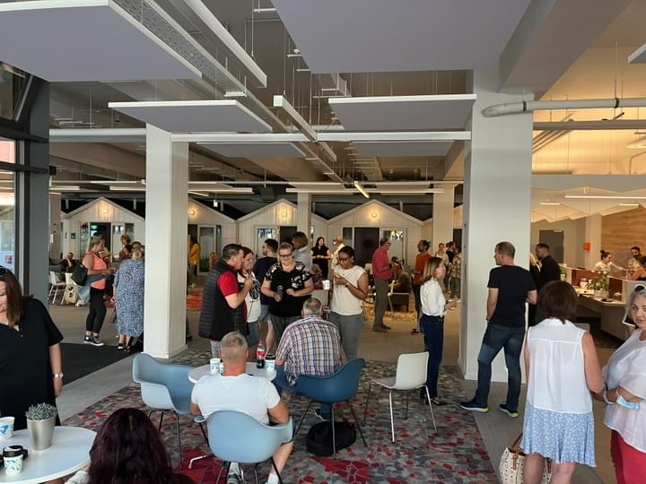
Arbeiterwohlfahrt Kreisverband Mönchengladbach
Umbau zu einer agilen Organisation
Lösungen und Gemeinschaft entwickeln durch Team- und Großgruppenmoderationen
"Wir haben unsere Organisation radikal verändert. Herr Schneidereit hat uns dabei Mut gemacht, ganz konsequent zu denken und zu handeln. Denn er hat uns gleichzeitig die Sicherheit gegeben, dass in vielen Formaten alle Kolleg*innen beteiligt wurden und die Schritte zur Veränderung von allen mitentwickelt und getragen wurden. Rückblickend die einzige Chance zum Erfolg.
Viele unserer Teams haben durch die Moderation von Rolf Schneidereit gemeinsame Identität und Sichtweisen entwickelt. Er schafft eine Gesprächsatmosphäre, in der jede Einzelne und jeder Einzelne mit ihren individuellen Anliegen gehört und anerkannt wird. Es bleibt dabei nicht bei Problemanalysen und Brainstormings, er fordert konkrete Ergebnisse und Vereinbarungen ein und holt das Wissen und Können der äußerst unterschiedlichen Teilnehmer*innen an die Oberfläche."
Viele unserer Teams haben durch die Moderation von Rolf Schneidereit gemeinsame Identität und Sichtweisen entwickelt. Er schafft eine Gesprächsatmosphäre, in der jede Einzelne und jeder Einzelne mit ihren individuellen Anliegen gehört und anerkannt wird. Es bleibt dabei nicht bei Problemanalysen und Brainstormings, er fordert konkrete Ergebnisse und Vereinbarungen ein und holt das Wissen und Können der äußerst unterschiedlichen Teilnehmer*innen an die Oberfläche."
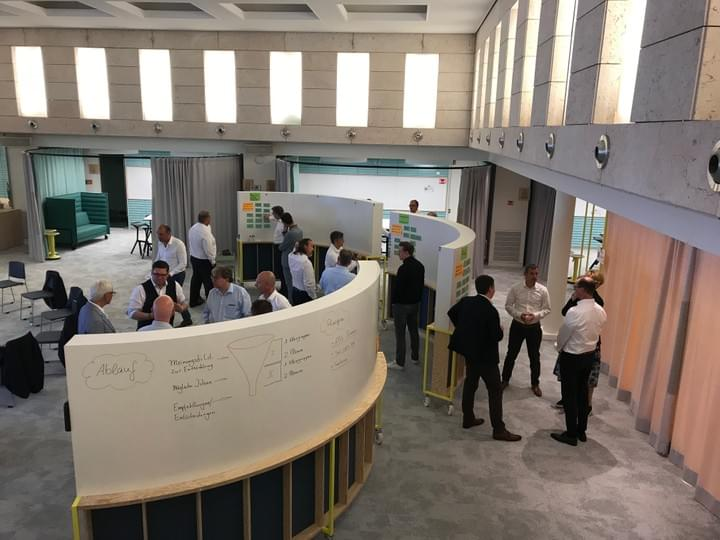
Bundesverband Deutscher Fertigbau e.V. (BDF)
Motivation zum gemeinschaftlichen Handeln
Ergebnis- und Konsentmoderation
"Einigkeit und gemeinsame Ziele sind für eine starke Interessengemeinschaft stets von herausragendem Wert. Mit viel Empathie und dem richtigen Maß an Impuls ist es dem Moderator Rolf Schneidereit gelungen, rund 20 Führungspersönlichkeiten unseres Verbandes in der Kürze eines eintägigen Workshops zum gemeinschaftlichen Handeln zu motivieren. Dabei zahlte sich seine tiefe inhaltliche Vorbereitung ebenso aus wie seine ergebnisorientierte Methodik. Herr Schneidereit verfügt als souveräner Kommunikator über das besondere Talent, Diskussionen freien Raum zu lassen, dem Beitrag aller Teilnehmenden gerecht zu werden und zugleich dem Miteinander-Reden eine produktive Richtung zu geben."
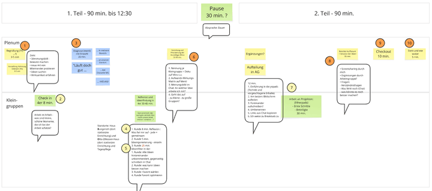
Diakonisches Werk Mönchengladbach e.V.
In die Tiefe - in kürzester Zeit
Organisationsdiagnose und Initiativenworkshops
"Wir haben drei Online-Workshops mit Ihnen, Herr Schneidereit, durchgeführt: einen zur Organisationsdiagnose und zwei zur Organisationsentwicklung in Einrichtungen. Durch die Workshops haben wir in der Führung ein klares Bild vom Bedarf der Organisationsentwicklung gewonnen und es sind diverse Initiativen wie ein Ideencafé, Schnuppertage, ein Quartiersnewsletter und Vorstandssprechstunden vor Ort entstanden. Die positiven Rückmeldungen zeigen uns, wie sehr es die Mitarbeitenden honorieren, dass wir ihnen zuhören. So realisieren die Teams, dass sie selbstständig Veränderungen bewirken können."
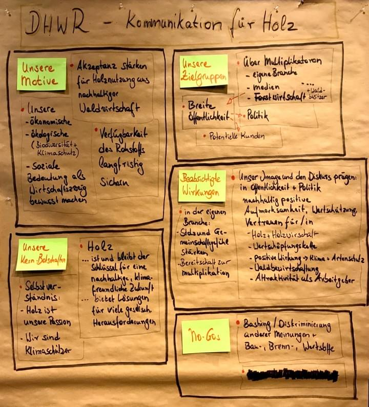
Deutscher Holzwirtschaftsrat (DHWR)
Das Gemeinsame definieren und ein großes Ziel vereinbaren
Ergebnis- und Konsentmoderation
"Gut zuhören, umsichtig ordnen, gekonnt strukturieren: Das sind aus unserer Sicht drei zentrale Elemente für gelingende Moderation. Rolf Schneidereit hat diese Elemente bei einem mehrtägigen Workshop unserer Dachorganisation beherzigt. In Online- wie auch in Präsenz-Sessions wurden verschiedene Diskussions- und Debattenformate sehr professionell eingesetzt, immer mit dem klaren Fokus auf das inhaltliche Ziel. Damit trug Rolf Schneidereit auch maßgeblich zu einer Atmosphäre des offenen Austausches und respektvollen Umgangs bei, in der die Teilnehmenden gemeinsam wichtige Fortschritte für ein bedeutendes Projekt auf den Weg brachten."
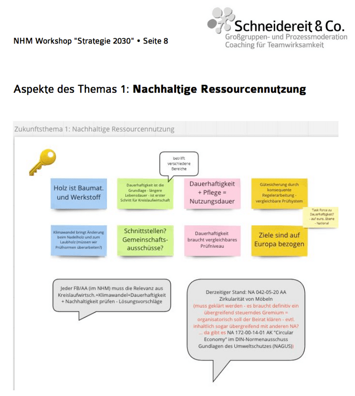
Deutsches Institut für Normung (DIN e.V.) / VFNHM
Online: Strategieentwicklung für ein hochkompliziertes Thema
Orientierung für einen Ausschuss des Deutschen Instituts für Normung (DIN e.V.)
"Unser Ziel war es, eine neue langfristige Strategie für den Normenausschuss Holz- und Möbelwirtschaft zu entwickeln. Die Herausforderungen waren dabei enorm: Über 20 Expert*innen und Verbandsvertreter*innen waren an zwei aufeinanderfolgenden, ganzen Tagen beteiligt – und das komplett online! Wir waren erst skeptisch und dann begeistert. Ziel zu 100% erreicht. Zu einem guten Teil haben wir das Rolf Schneidereit zu verdanken, der uns technisch und menschlich kompetent auch durch die schwierigen Phasen des Diskussionsprozesses navigiert hat."
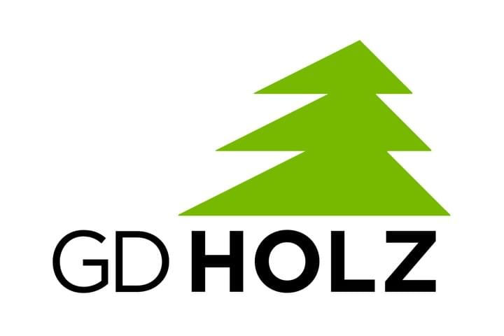
Gesamtverband Deutscher Holzhandel e.V.
Den Kurs setzen in schwierigen Zeiten
Zweitägiger Strategieworkshop
"Wir hatten mit Rolf Schneidereit einen zweitägigen Strategieworkshop durchgeführt. Wir haben intensiv gearbeitet – waren offen, ergebnisorientiert und jederzeit motiviert. Wir haben viele konkrete Projekte zur Umsetzung herausgearbeitet. Daher können wir Herrn Schneidereit als Moderator sehr empfehlen."
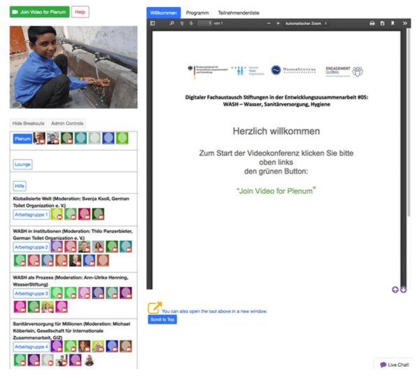
Engagement Global gGmbH
Sicherheit bei Onlinekonferenzen
Die didaktische, dramaturgische und technische Transformation bestens bewältigt
"Im September 2020 haben wir mit Hilfe von Rolf Schneidereit und seinem Team erstmalig eine analog geplante Tagung zu einem anspruchsvollen entwicklungspolitischen Thema in ein digital-virtuelles Format umgewandelt. Mit seiner Unterstützung haben wir die didaktische, dramaturgische und technische Transformation bestens bewältigt. Seine ruhige (und beruhigende) Kommunikation im Vorfeld und seine souveräne Moderation des Tages war für alle Beteiligten sehr angenehm und entlastend."
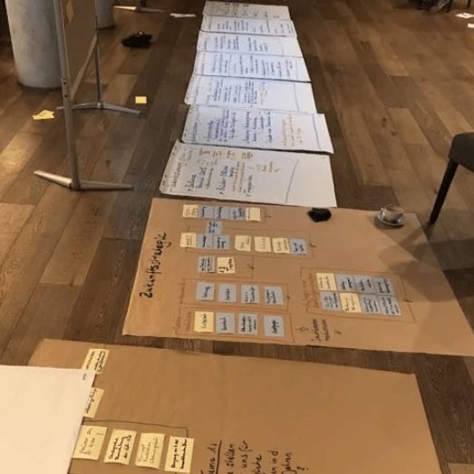
Karl Bachl Betonwerke GmbH & Co. KG
Maximales Gefühl von Motivation und Gemeinschaft
Umstrukturierung und Neuausrichtung eines Geschäftsbereichs
"Rolf Schneidereit hat uns bereits zum zweiten Mal in einer Phase der Umstrukturierung und Neuausrichtung eines Geschäftsbereiches im Rahmen einer Führungsklausur entscheidend begleitet. Innerhalb kurzer Zeit gelingt es ihm, sich auf die gegebenen Umstände und die unterschiedlichen Charaktere einzustellen und bei den Teilnehmern das maximale Gefühl an Motivation und Gemeinschaft auszulösen. Mit Herrn Schneidereit haben wir intensiv lösungs- und zukunftsorientiert gearbeitet."
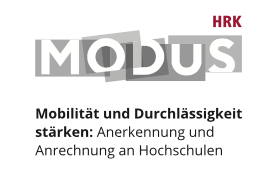
Hochschulrektorenkonferenz (HRK) - MODUS
Kollektiv intelligent im virtuellen Raum
Anerkennung und Anrechnung an Hochschulen
"Als erfahrener Experte auf dem Gebiet der Online-Moderation hat Herr Schneidereit zwei Workshops nicht nur angenehm und souverän moderiert, sondern uns bereits im Vorfeld mit wertvollen Anregungen und kreativen Ideas unterstützt und somit zum Erfolg unserer Workshops beigetragen. Durch seine natürliche und empathische Art versteht er es, die Teilnehmerinnen und Teilnehmer sowohl auf der persönlichen als auch auf der inhaltlichen Ebene abzuholen."
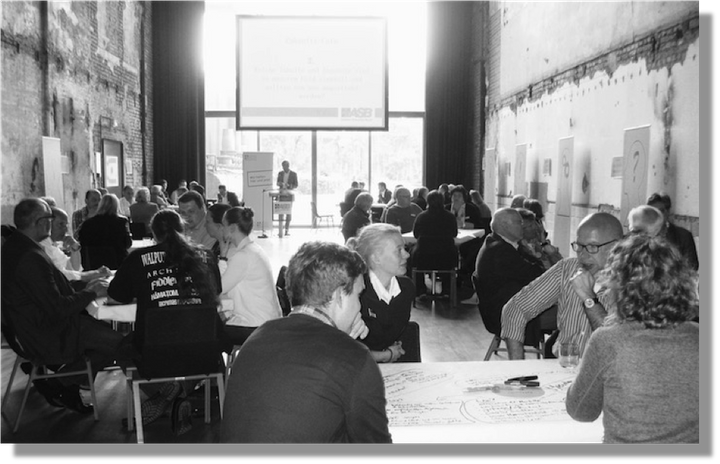
Arbeiter-Samariter-Bund (ASB) NRW e.V.
Wirksame Organisationsentwicklung
Klausurtagung und Verbandsentwicklungsprozess
"Lieber Herr Schneidereit, ganz herzlichen Dank für Ihre tolle Arbeit sowie für Ihre empathische, souveräne, entspannte und menschengewinnende Moderation unserer Klausurtagung. Das haben Sie super gemacht. Ich persönlich war begeistert und die Rückmeldungen, die ich sonst bekommen habe, waren durchweg positiv. Die Veranstaltung war neben des inhaltlichen Zugewinns ein außerordentlicher Beitrag zur Weiterentwicklung der Nachwuchsführungskräfte."
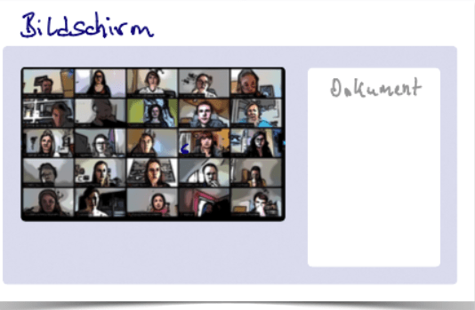
Transferagentur Kommunales Bildungsmanagement NRW
Beeindruckende Online-Workshops
Netzwerkarbeit in virtuellen Kommunikationsräumen
"Vielen Dank für den erfolgreichen digitalen Qualifizierungsworkshop „Netzwerkarbeit in virtuellen Kommunikationsräumen“ für Fachkräfte im Kommunalen Bildungsmanagement. Es war sehr beeindruckend zu sehen, wie Sie die mehr als 50 Teilnehmenden auf eine virtuelle Reise mitgenommen haben, so dass diese sich als Expert*innen ihres Themas verstehen und ihr Wissen miteinander teilen konnten. Der gelungene Methodenmix ermöglichte das praxisnahe Ausprobieren digitaler Tools."
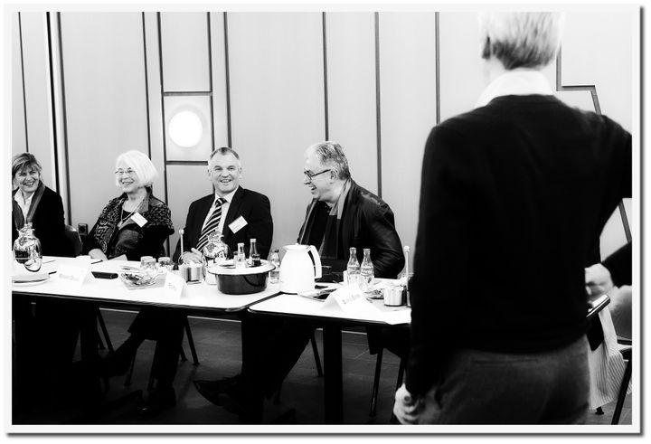
Stadtwerke Nettetal
Verbindender Dialog
Erstes Kundenforum für Kundenorientierung
"Auf der Suche nach neuen Wegen der Kundenorientierung haben wir erstmalig ein Kundenforum durchgeführt. Im Vorfeld hatten wir einige Sorge, ob eine solche Diskussion nicht entgleiten kann. Wie sich zeigte, waren sie unbegründet. Durch seinen zugewandten und humorvollen Moderationsstil gelingt es Herrn Schneidereit, selbst harte Kritik in konstruktive Bahnen zu lenken. Sehr erfreulich fanden wir, dass deutlich wurde, wie sehr die Kunden uns als 'ihre Stadtwerke' schätzen."
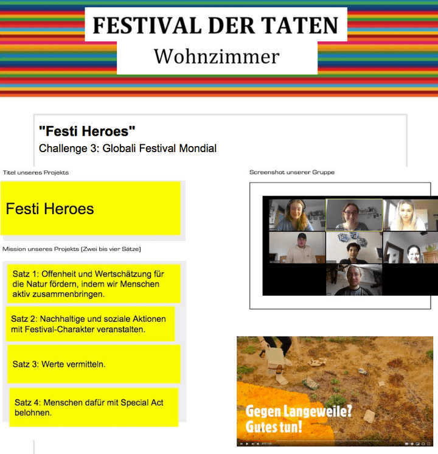
Engagement Global gGmbH / #17Ziele
Lebendige Onlinekonferenzen
Festival der Taten (digital & analog)
"Lieber Rolf, dank Deiner konkreten Vorschläge, wie das 'Festival der Taten' online gelingen kann, konnten wir es trotz aller Hürden, die uns durch Corona in den Weg gelegt wurden, auch 2020 realisieren. Zweimal haben wir es nun digital mit Deinem umsichtigen Support für Prozess und Moderation durchgeführt. Die positiven Rückmeldungen der vielen hundert Teilnehmenden zeigen, dass wir auch mit der Onlineversion erfolgreiche Arbeit leisten."
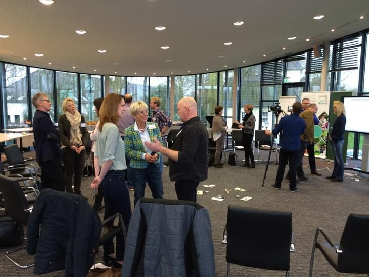
Verband des Deutschen Blumen- Groß- und Importhandels e.V. (BGI)
Impulse für die Verbandsarbeit
Offener Innovationsprozess & Mitglieder-Workshops
"Anfang 2016 haben wir uns entschlossen, in unserer Verbandsarbeit neue Wege zu beschreiten und unsere Mitglieder zu einem offenen Innovationsprozess einzuladen. Dieses Experiment ist auf ganzer Linie gelungen. In den zwei zweitägigen Workshops sind viele kreative Ideen und Impulse entstanden und neue Verbindungen zwischen den Mitgliedern geknüpft worden. Haben Sie herzlichen Dank für Ihre zielführende und humorvolle Moderation."